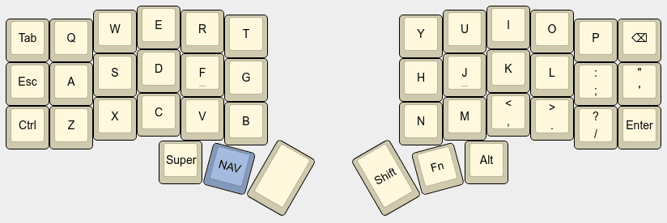
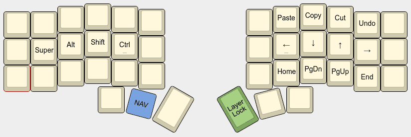

QMK: Layer Lock key
Pascal Getreuer, 2022-02-01 (updated 2025-07-24)
🚀 Launched
Layer Lock is now a core QMK feature! It was released on 2024-11-27. Update your QMK set up and see QMK Layer Lock.
🚀 Launched
Layer Lock is available for ZSA keyboards in Oryx! Edit a non-base layer in Oryx and assign Lock Layer to a key (announcement).
🚀 Launched
Layer Lock in Vial 0.7.4! Assign a Layer Lock key from the Layers keycode tab.
Overview
Layers are often accessed by holding a button, using a momentary
layer switch MO(layer) or layer tap
LT(layer, key) key. But you may sometimes want to “lock” or
“toggle” the layer so that it stays on without having to continue to
hold the button. One way to do that is with a tap-toggle TT
layer key, but here is an alternative.
This post describes a Layer Lock key. When tapped, it “locks” the highest layer to stay active, assuming the layer was activated by one of the following keys:
MO(layer)momentary layer switchLT(layer, key)layer tapOSL(layer)one-shot layerTT(layer)layer tap toggleLM(layer, mod)layer-mod key (the layer is locked, but not the mods)
Tapping Layer Lock again unlocks and turns off the layer.
Additionally, when a layer is “locked,” other layer keys such as
TO(layer) will override and unlock the layer.
(Side note: This is not to be confused with another meaning of “layer lock,” which refers to a bugged keymap in which it is impossible to switch layers.)
Add it to your keymap
If you are new to QMK macros, see my macro buttons post for an intro.
Step 1: In your keymap.c, add a custom
keycode for the Layer Lock key and use the new keycode somewhere in your
layout. I’ll name it LLOCK, but you can call it anything
you like.
enum custom_keycodes {
LLOCK = SAFE_RANGE,
// Other custom keys...
};Step 2: Handle Layer Lock from your
process_record_user() function by calling
process_layer_lock(), passing your custom keycode as the
third argument:
#include "features/layer_lock.h"
bool process_record_user(uint16_t keycode, keyrecord_t* record) {
if (!process_layer_lock(keycode, record, LLOCK)) { return false; }
// Your macros ...
return true;
}Step 3: In your rules.mk file, add
SRC += features/layer_lock.cStep 4: In the directory containing your
keymap.c, create a features subdirectory and
copy layer_lock.h
and layer_lock.c
there.
Troubleshooting: If your keymap fails to build, a
likely reason is that your QMK installation needs to be updated. If you
have the qmk_firmware git repo cloned locally, do a
git pull. Or see Updating
your master branch for more details.
Example use
Consider a keymap with the following base layer.

The highlighted key is a momentary layer switch MO(NAV).
Holding it accesses a navigation layer.

Holding the NAV key is fine for brief use, but awkward to continue holding when using these functions continuously. The Layer Lock key comes to the rescue:
Hold the NAV key, activating the navigation layer.
Tap Layer Lock.
Release NAV. The navigation layer stays on.
Make use of the arrow keys, etc.
Tap Layer Lock or NAV again to turn the navigation layer back off.
A variation that would also work is to put the Layer Lock key on the
base layer and make other layers transparent (KC_TRNS) in
that position. Pressing the Layer Lock key locks (or unlocks) the
highest layer, regardless of which layer the Layer Lock key is
on.
Customization options
Idle timeout
Optionally, Layer Lock may be configured to deactivate if the
keyboard is idle for some time. This is useful to avoid confusion if you
get interrupted and step away from your desk while a layer is locked. In
your config.h, define LAYER_LOCK_IDLE_TIMEOUT:
#define LAYER_LOCK_IDLE_TIMEOUT 60000 // Turn off after 60 seconds.where the time is in units of milliseconds. Then in your keymap.c,
define (or add to) housekeeping_task_user() as
void housekeeping_task_user(void) {
layer_lock_task();
// Other tasks...
}The default behavior (when LAYER_LOCK_IDLE_TIMEOUT isn’t
set, or set to 0) is that Layer Lock never times out, and in this case
it isn’t necessary to call layer_lock_task().
Functions
Use the following functions to query and manipulate the layer lock state.
| Function | Description |
|---|---|
is_layer_locked(layer) |
Checks whether layer is locked. |
layer_lock_on(layer) |
Locks and turns on layer. |
layer_lock_off(layer) |
Unlocks and turns off layer. |
layer_lock_invert(layer) |
Toggles whether layer is locked. |
Representing the current Layer Lock state
There is an optional callback layer_lock_set_user() that
gets called when a layer is locked or unlocked. This is useful to
represent the current lock state for instance by setting an LED. In your
keymap, define
void layer_lock_set_user(layer_state_t locked_layers) {
// Do something like `set_led(is_layer_locked(NAV));`
}Combine Layer Lock with a mod-tap
You may want to combine the Layer Lock key with a mod-tap MT key that acts as a modifier on hold and Layer Lock on tap, for instance to make double-duty use of a comfortable key position.
Since custom keycodes (>= SAFE_RANGE) are not basic keycodes, attempting
“MT(mod, LLOCK)” is invalid does not work directly. This
effect can nevertheless be achieved through changing the
tap function. The following demonstrates a SFTLLCK key
that acts as Shift on hold and Layer Lock on tap:
#define SFTLLCK LSFT_T(KC_0)
// Use SFTLLCK in your keymap...
bool process_record_user(uint16_t keycode, keyrecord_t* record) {
if (!process_layer_lock(keycode, record, KC_NO)) { return false; }
switch (keycode) {
case SFTLLCK: // Shift on hold, Layer Lock on tap.
if (record->tap.count) {
if (record->event.pressed) {
// Toggle the lock on the highest layer.
layer_lock_invert(get_highest_layer(layer_state));
}
return false; // Skip default handling on tap.
}
return true; // Continue default handling on hold.
// Other macros...
}
return true;
}In the above, KC_0 is an arbitrary placeholder for the
tapping keycode. This keycode will never be sent, so any basic keycode
will do. In process_record_user(), the tap press event is
changed to to toggle the lock on the highest layer.
Layer Lock can be combined with a layer-tap
LT key similarly. See MT
doesn’t work with this keycode for further examples of combining
MT and LT with non-basic keycodes.
Interoperation with tri layer
If you use tri layer, a tweak is needed to make the third layer lockable by Layer Lock. The update_tri_layer_state function is usually called from keymap.c in the form
layer_state_t layer_state_set_user(layer_state_t state) {
return update_tri_layer_state(state, _LOWER, _RAISE, _ADJUST);
}Change this to update the state only when the third layer is unlocked:
layer_state_t layer_state_set_user(layer_state_t state) {
if (!is_layer_locked(_ADJUST)) {
state = update_tri_layer_state(state, _LOWER, _RAISE, _ADJUST);
}
return state;
}Compared to DF(layer)
Another way to set a layer to be always on is to set it as the
default layer with the
DF(layer) keycode, comparable to Layer Lock:
DF(layer)sets exactly one layer to be always on, changing the base layer to that layer. The intended use is that “When you have multiple base layers you should always treat them as mutually exclusive.”Layer Lock on the other hand does not change the base layer. The idea is to enable locking a partially transparent layer above the existing base layer. Also, it is easy to “break the lock” with Layer Lock, for instance a
TO(layer)keycode or user code callinglayer_off(layer)will override and unlock the layer, but neither of these things change the default layer. This helps avoid getting into a situation where a layer gets stuck on and makes other layers impossible to reach.
Explanation
Internally, a variable locked_layers tracks the lock
state for each layer. It is a bitfield where the kth bit is
on if layer k is locked.
On an MO(layer), TT(layer),
LM(layer, mod), or LT(layer, key) event, the
layer is extracted from the keycode and checked against
locked_layers. Since the normal release event handling for
these keys is to turn the layer off, we indicate that this handling
should be skipped (return false) if the layer is locked to keep the
layer on.
For one-shot layer OSL(layer) keys, we check when
locking whether the layer being locked is
get_oneshot_layer(). If so, we call
reset_oneshot_layer() to forget the OSL state. This way the
OSL handling doesn’t turn the layer off after the next keypress.
Even when a layer is nominally “locked,” it is possible and expected
that other features may nevertheless turn the layer off. To account for
this, we compare locked_layers vs. the layer state on each
key event and set layers with broken locks to be unlocked.
Acknowledgements
Thank you to @mwpardue, @drashna, @ujl123, @sporkus, @EdenEast, @Dimagog on GitHub and u/DB_Cooper75 on Reddit for contributions and feedback to improve this feature. And special thanks to @drashna for getting Layer Lock added to QMK core.